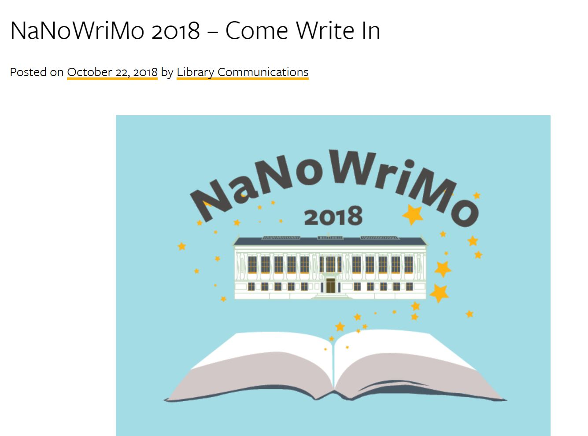
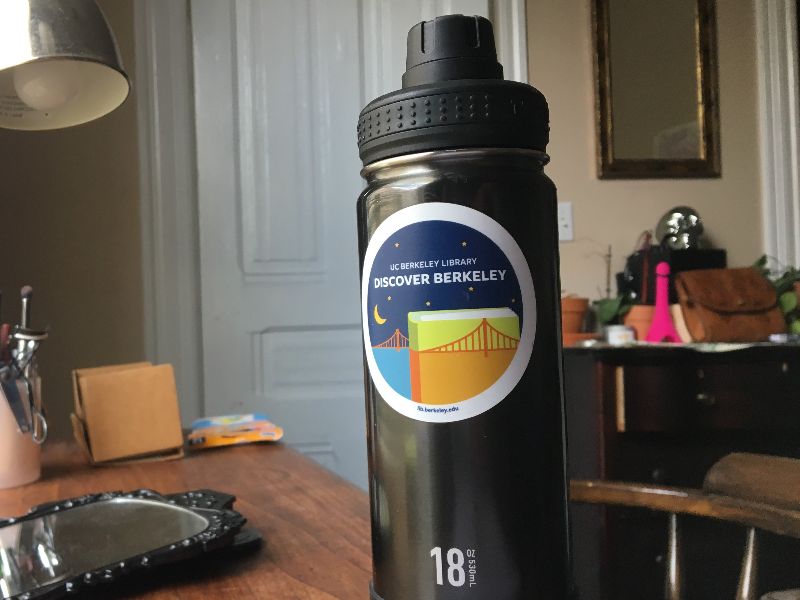

Graphic Design Intern.
I will often get assignments from the Digital Humanities department to do promotional signage for their events. Anytime I do work for a bigger event, I will present a series of packaged design elements (colors, layouts, graphics, and font choices). I then run it by upper management and then work on refining the images, coloring and layout to suit the needs of the communications office and the organization that requested the work.
Another prominent project I worked on for the communications office was promotional materials for the libraries’ National Novel Writing Month (NaNoWriMo) events. I created a vector image of Doe Library, one of UC Berkeley’s landmark buildings and the location of the event, against a blue background pulled from the NaNoWriMo shield.

Most recently, I worked on designing a sticker for the library communications office to hand out at Cal Day. We went through several iterations of graphic elements, but decided to use this image of Golden Gate bridge over the bay, a view that can be seen when standing under the Campanile.
A few thousand of these stickers were produced by the communications office to distribute on campus both for the event and for future promotional needs. This sticker has been spotted on water bottles, laptops, folders, and more!
In addition to doing graphic work, I also help to maintain and organize the exhibits within the library. My duties include digitally archiving old exhibit materials, regular maintenance of display cases, assembling exhibits in their cases and sitting in on committee meetings.
Please contact me if you’d like to see some of the other graphics and projects I’ve worked on for the communications office! In addition to posters, I’ve worked on video props, floorplans, online buttons and other materials.